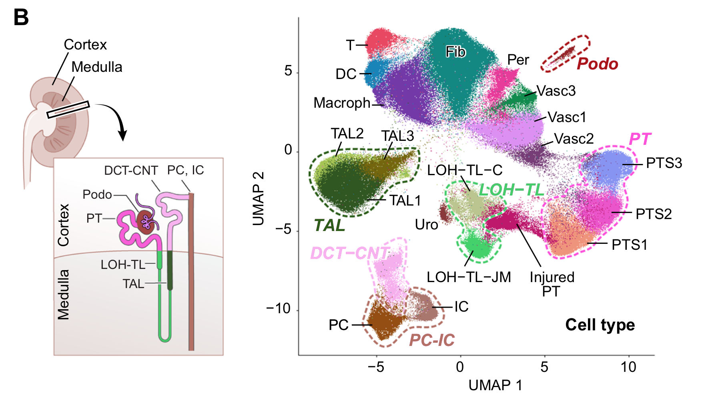
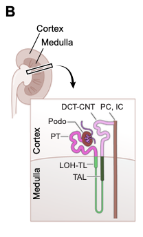
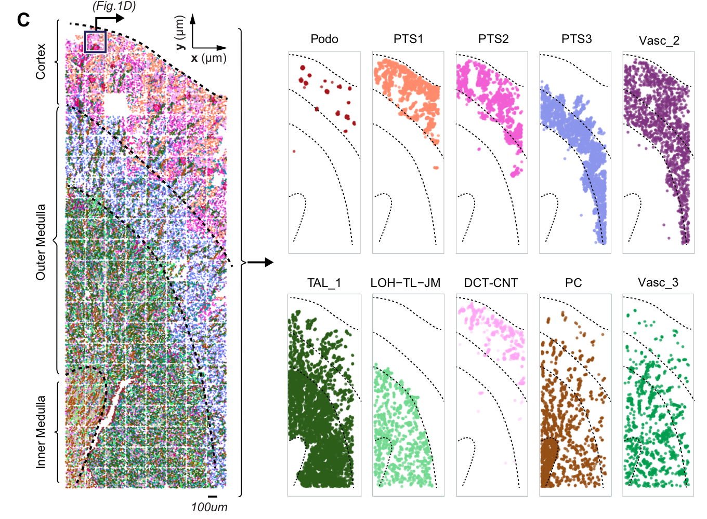
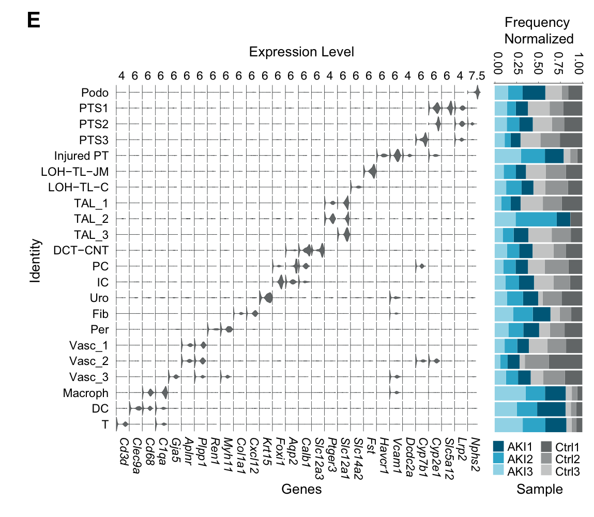
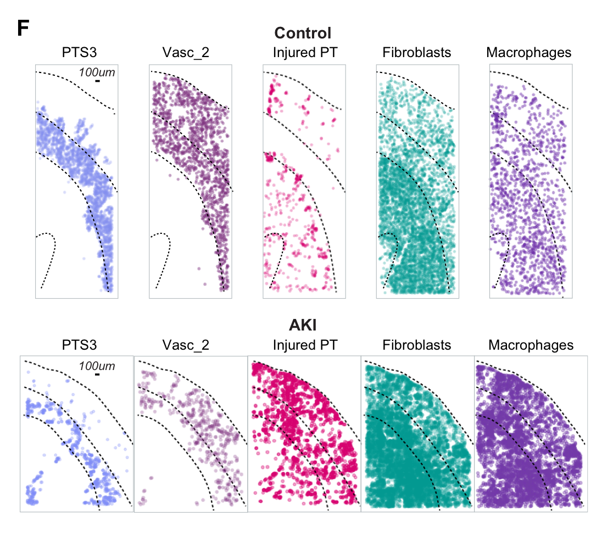
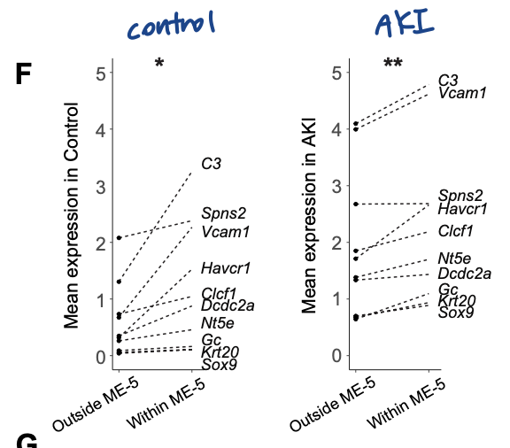
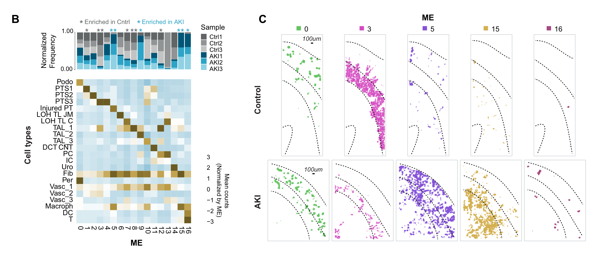
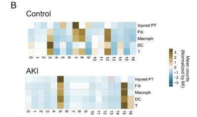

Spatial transcriptomics defines injury specific microenvironments and cellular interactions in kidney regeneration and disease
Introduction
- we apply single cell spatial transcriptomics to examine ischemia-reperfusion injury in the mouse kidney
- Spatial analysis identifies cellular microenvironments resembling early tertiary lymphoid structures and associated molecular pathways
- AKI를 다룬다
Kidney-related
- Proximal tubule cells are highly active metabolically and are, therefore, particularly susceptible to acute kidney injury (AKI), an abrupt loss of excretory kidney function that can be caused by multiple insults, including ischemia, sepsis, and nephrotoxic drugs
- CKD is characterized by renal inflammation and fibrosis
- The heightened risk of CKD following AKI has been linked to the limited regenerative capacity of the mammalian kidney
- However, even mild injury is associated with epithelial scarring and the persistence of maladaptive epithelial cells expressing inflammation-inducing cyto- kines and fibrosis-associated secretory factors. Inflammation, fibrosis, and vascular rarefaction are key features of the pathological niche surrounding maladaptive epithelial cells
- AKI → pro-inflammatory + pro-fibrotic signaling → AKI-to-CKD progression
- This approach uncovered AKI-specific cellular neighbor- hoods and cell-cell interactions relevant to inflammation and fibrosis and identified target molecules and pathways potentially driving AKI progression.
- Injured proximal tubule cells display the cell adhesion molecule Vcam1 and adopt a senescence-associated secretory phenotype (SASP)
- Kidney 구조

Method
- Mouse Kidney(Control vs After AKI (several conditions)
- seqFISH for Spatial data analysis
Results
1. Kidney Cell Type Annotation
- Kidney → the conjoined epithelial networks of the nephron and collecting system

- Cortex(겉질) vs Medulla(속질)
- Cortex: 사구체, 근위세뇨관(PT), 원위세뇨관(DCT-CNT), 집합관에서의 기능을 수행하는 세포들이 분포
- Podo
- PT1,PT2,PT3 (Proximal Tubule)
- DCT-CNT(Distal & Connecting Tubule) : 원위세뇨관 및 연결세뇨관에서 이온 재흡수
- PC(Principal Cells) : 집합관에서 물과 이온의 재흡수
- IC(Intercalated Cells) : 산-염기 균형 조절
- Vasc1,Vasc2,Vasc3(Vascular Cells)
- Fib
- Macrophage
- Medulla: 헨레 고리(LOH, TAL)와 같은 구조를 포함하여 주로 물과 이온의 재흡수 및 삼투압 조절에 중요한 세포들이 위치
- TAL1,TAL2,TAL3 : 헨레 고리 상행각에서 Na+, K+, Cl- 이온 재흡수
- LOH-TL-C, LOH-TL-JM : 헨레 고리 얇은 부분에서 삼투압 조절
- Uro : 속질에 있는 상피 세포(epithelial)
- Cortex: 사구체, 근위세뇨관(PT), 원위세뇨관(DCT-CNT), 집합관에서의 기능을 수행하는 세포들이 분포
💡 snRNAseq보다 seqFISH로 cell type을 detecting했을 때 less biased된 것을 강조하고 있음



Marker gene 정리 (Mouse Kidney)
| Podo | PTS(Proximal Tubule Segment) | Injured PT (Injured Proximal Tubule) | LOH-TL (Loop of Henle Thin Limb) | TAL (Thick Ascending Limb) | DCT-CNT |
|---|---|---|---|---|---|
| NPHS2 | PTS1,2 - CYP2E1,SLC5A12 PTS3 - CYP7B1 | VCAM1 | FST,SLC14A2 | SLC12A1, PTBGER3 | SLC12A3,CALB1 |
| PC | IC | Uro | Fib | Per | Vascular Cells | Macrophage | DC | T |
|---|---|---|---|---|---|---|---|---|
| AQP2 | FOXI1 | KRT15 | CXCL12 | MYH11,REN1 | PLPP1, APLNR, GJA5 | C1QA, CD68 | CLEC9A | CD3D |
💡 Injured PT
- a marked increase was observed in injured proximal tubule cells, as identified by the expression of Vcam1
- Injured proximal tubule cells display the cell adhesion molecule Vcam1 and adopt a senescence-associated secretory phenotype (SASP)

- Control vs AKI
- Fibroblast, Macrophage, T cell, Dendritic Cell population이 AKI sample에서 증가된 비율로 나타남
- injured에서 증가된 Fibroblast와 macrophage는 cortical expansion과 관련이 있음, 반면 uninjured에서는 Fibro와 Mac이 Medulla에서 두드러지게 나타남
⇒ AKI가 Cell type composition과 location의 global change에 영향을 미친다
2. Neighborhood Analysis
- Cell population change가 local kidney architecture re-organization으로 이어지는지
- ME(Spaital Cluster, 30 μm) 내 Cell type frequency 측정 → cell-by-neighbor matrix(Leiden Clustering)
→ 총 17개의 ME 중 5개가 AKI-specific하게 나타남(Fig.1C)


- AKI-specific ME가 주로 injured epithelium, fibroblast, immune cell들로 구성되어 있으며 primary tissue cell이 대부분 없어져있음
- DC, T cells, Fibroblasts, Mac이 Control과 After AKI를 비교하였을 때 다른 ME에서 나타남
→ Therefore, the emergence of these cells, whether by differentiation, proliferation, or recruitment from the blood, results in redistribution into distinct local environments upon AKI
💡 differentiation, proliferation, or recruitment from the blood으로 인해 redistribution of local environments이 일어날 수 있다
ME-5 관련
- Our analysis suggests that the cellular neighborhood of injured cells correlates with a more severe injury phenotype even within AKI and that cellular interac- tions within this neighborhood could be a driver of injury progression
- The majority of injured PTs and injury-associated fibroblasts, vasculature, and immune cells reside within this niche, and morphological changes within the injured epithelium are associated with elevated expression of injury- response genes.